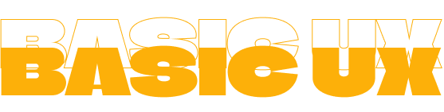

03
DURATION: 5 WEEKS
(23/09/24 - 25/10/24)
LEARNINGS
- Design briefs
- User types
- Basic content creation
- Idea generation
- Figma Lo-Fi prototyping / wireframe creation
- Moodboards, values
- Style tile creation
- Likert tests, 5-sec tests
- Think-aloud tests
- Research methods
- Documentation
- Lighthouse test
- Heuristic test
- Favicon implementation
- Layout diagrams
Basic UX didn’t just teach us user experience and user interaction, but also research methods and ways to test and validate our work. The unit project was a themed website of our own choosing, about a passion we have or a need that we see should be filled. I picked the topic of “Dungeons & Dragons”, a pen-and-paper roleplaying game from the 1980s, which recently had a group start up in KEA.
This was our first proper time working with Figma, so there was a lot of independent learning and practice involved in order to get comfortable with using the software. I find it particularly useful in the development of wireframes and functional prototypes, both of which I created and tested in order to reach my final product. I also created layout diagrams to help guide me when it came to coding the website.
I employed both likert tests, 5-second tests, think-aloud interviews and lighthouse tests in the creation and validation of my website. I gave a presentation on my process afterwards.